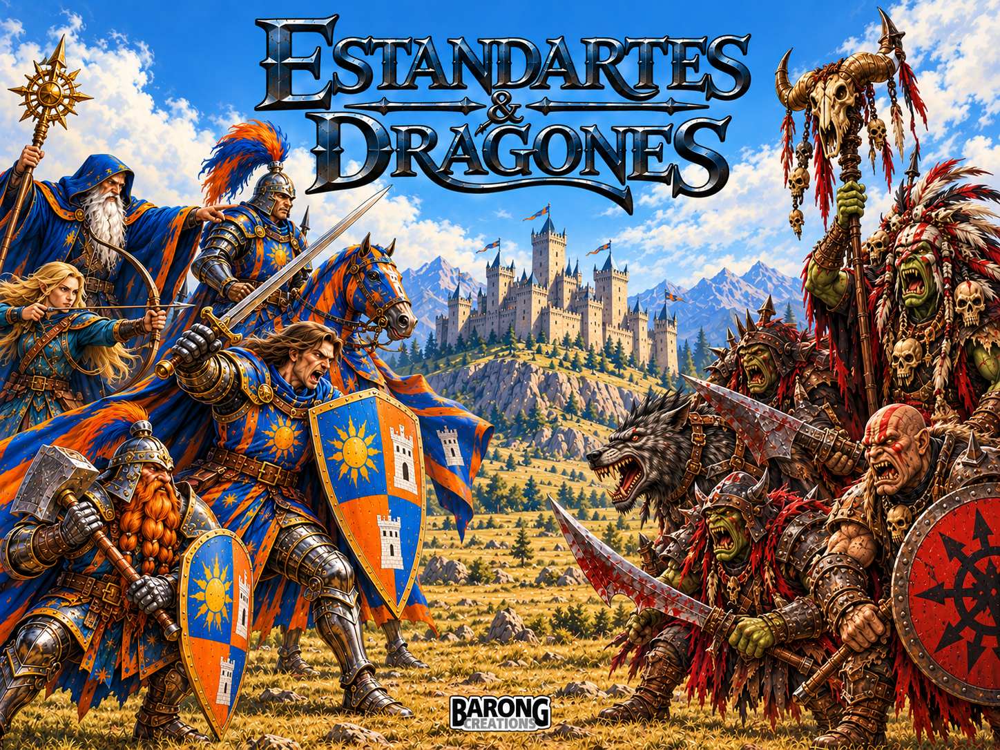
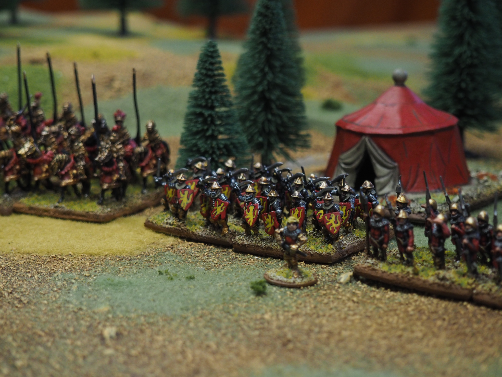
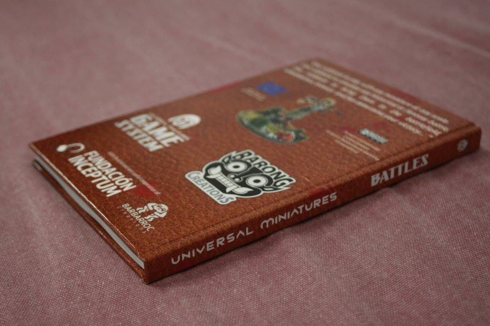

Reglamento DBA 3.0
Reglamento completo en castellano.
Ver en Wargame Vault ↗Historical battles, fantasy worlds and tabletop adventures. Welcome to Barong Creations.
Discover Estandartes & DragonesDBA 3.0 in Spanish
Inspired by the classic miniature wargames of the 1990s, Estandartes & Dragones delivers fast-paced fantasy battles designed to finish in under an hour.
Forget conventional points-based army building. Define your faction with its own faction sheet and shape your army through a territory-based creation system, where the lands you control influence the forces you bring to battle.
Built around balanced encounters and narrative freedom, the rules combine meaningful tactical choices with the stories of your kingdoms, armies and heroes.
Your faction. Your territories. Your legend.
Build your own faction, develop its territories and assemble your army with our interactive army-building tool.
Designed for desktop and mobile browsers.
Descubre DBA 3.0 en castellano: batallas de la Antigüedad y la Edad Media con ejércitos de miniaturas, decisiones tácticas y partidas ágiles.
Explora el reglamento y los libros de listas de ejército publicados por Barong Creations.
Ediciones digitales
Reglamento completo en castellano.
Ver en Wargame Vault ↗
Listas de ejército de la Antigüedad para DBA 3.0.
Ver en Wargame Vault ↗Listas de ejército medievales para DBA 3.0.
Ver en Wargame Vault ↗Referencia rápida de las reglas para consultar durante la partida.
Ver en Wargame Vault ↗Our earlier universal miniature wargaming system, designed for players who enjoy bringing different armies and settings to the tabletop.
UMB remains part of our catalogue.
Purchase link pending